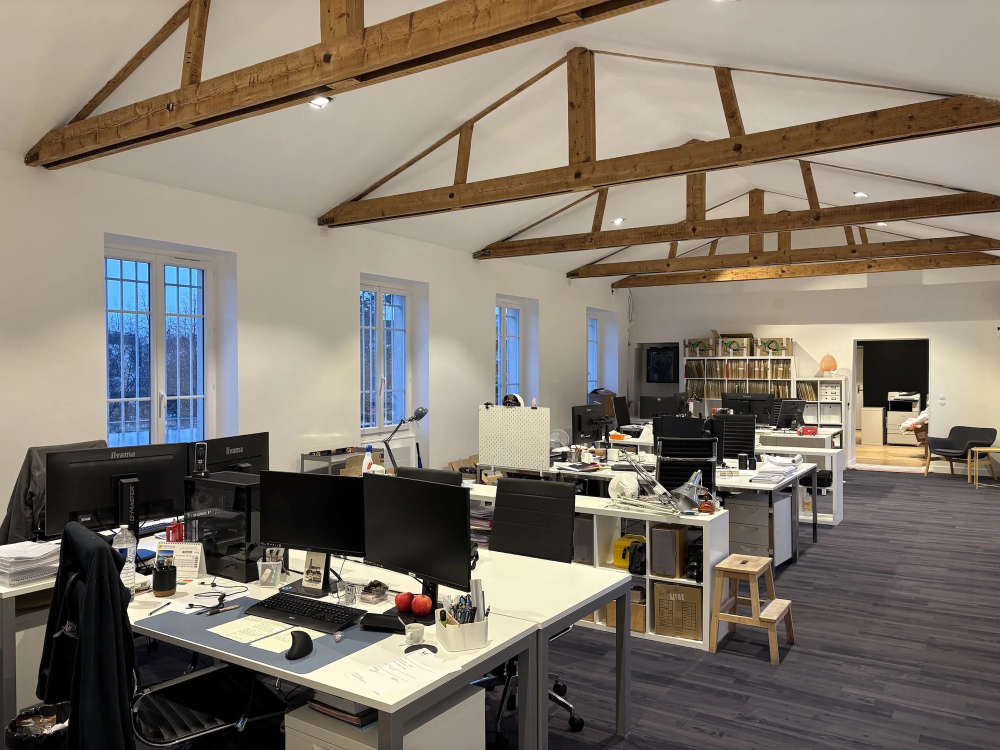

2030
−40%
Objectif de réduction de la consommation énergétique finale par rapport à une année de référence située entre 2010 et 2019.
Pour les équipements publics, VJL travaille les usages, la lisibilité des volumes, les matériaux durables, la lumière naturelle et l’intégration paysagère. Pour le tertiaire, le cabinet accompagne diagnostic, planification et travaux.

Écoles, médiathèques, gymnases et autres équipements au service des usagers et des collectivités.
Écouter les usages. Valoriser le lieu. Garder des volumes simples et lisibles. Choisir des matériaux durables pour inscrire le bâtiment dans le temps.
 Architecture & contexte
Architecture & contexteL’approche présentée par VJL associe attention aux besoins des usagers et des élus, valorisation du site, simplicité des volumes et choix de matériaux durables. Le bois, la lumière naturelle et l’intégration paysagère font partie des leviers mobilisés selon le projet.
Le dispositif concerne les bâtiments tertiaires existants ou parties de bâtiments à usage tertiaire à partir de 1 000 m², y compris en cumul sur un même site.
Objectif de réduction de la consommation énergétique finale par rapport à une année de référence située entre 2010 et 2019.
Une trajectoire qui suppose de planifier les actions dans le temps, en hiérarchisant les interventions à fort impact.
Une transformation progressive du parc tertiaire, articulant enveloppe, équipements, régulation et usages.
Réaliser une lecture architecturale et énergétique complète du bâtiment.
Transformer les constats en trajectoire réaliste et lisible.
Passer de la stratégie au projet puis au chantier.
Isolation thermique des murs, toitures ou planchers ; rénovation des menuiseries et vitrages performants.
↗Passage à des systèmes de chauffage ou de rafraîchissement plus efficaces, selon les besoins du bâtiment.
↗LED, détection de présence, GTB / BACS et autres dispositifs d’automatisation et de régulation.
↗Mobilisation des usages, éco-gestes et programmation horaire pour compléter la performance du bâti.
↗